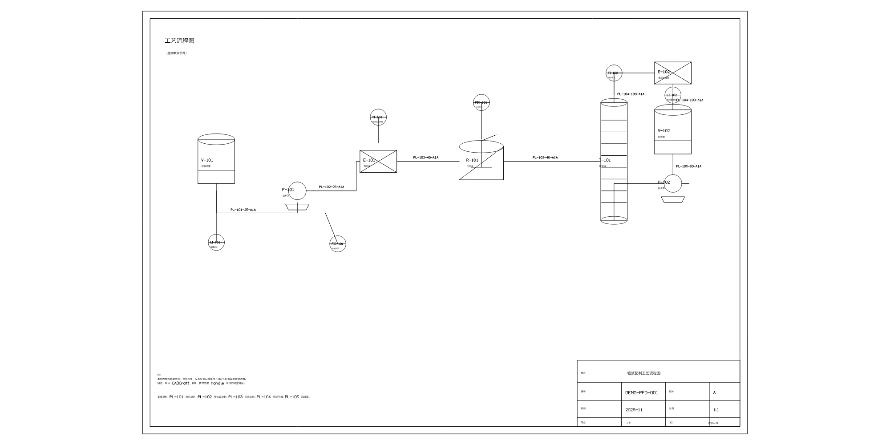

专题 · 和图纸对话 · 第 1 讲 · 爸爸
装好 CADCraft 和命令行，先看一张图
从零安装 CADCraft App 和 cadcraft-cli，建好私有工作目录，用命令行读取第一张虚构图纸并导出预览。
这一讲从零开始：不要求电脑里已经装过 CADCraft，也不要求会用终端。我们装两个东西：
- CADCraft App：你用来打开图纸、目视核对；
- cadcraft-cli：让 Harness 读取和修改图纸的命令行工具。它和 App 是同一个版本，不需要打开窗口。
图纸仍然只在副本上操作。真实图纸只放在本机的 ~/CAD-Work/，不进课程仓库。
1. 建工作目录
打开「终端」，或者在 Harness 里让它执行下面这行：
mkdir -p ~/CAD-Work/{tools,config,originals,work,preview,notes}
目录用途：
| 目录 | 放什么 |
|---|---|
originals/ |
原件副本，只读，不覆盖 |
work/ |
修改后的新文件和中间副本 |
preview/ |
PNG/PDF 预览 |
notes/ |
读图记录、台账、核对结果 |
tools/ |
命令行工具 |
config/ |
CADCraft 的设置和日志，和系统设置隔离 |
2. 安装 CADCraft App
- 打开 CADCraft 官网，或直接打开 GitHub 最新版本。
- 在 macOS 下载区找
cadcraft-0.20.1-macos-universal.dmg。universal表示 Apple 芯片和 Intel 都能用；这一讲的步骤按 0.20.1 写，下载到更新版本时文件名里的版本号会不同。 - 核对下载是否完整。把
SHA256SUMS.txt也下载到「下载」目录，然后在终端运行：
cd ~/Downloads
shasum -a 256 cadcraft-0.20.1-macos-universal.dmg
grep cadcraft-0.20.1-macos-universal.dmg SHA256SUMS.txt
两行哈希必须完全一样。不一样就重新下载，不要继续安装。
- 双击 DMG，把 CADCraft 拖进「应用程序」，然后在 Finder 边栏推出安装镜像。
- 第一次打开时，如果 macOS 提示「无法验证开发者」，在 Finder 的「应用程序」里右键 CADCraft →「打开」，或到「系统设置 → 隐私与安全性」点「仍要打开」。
- 打开后看菜单「CADCraft → 关于 CADCraft」，确认版本是 0.20.1。CADCraft 要求 macOS 11 或更新；系统太旧时先升级系统。
App 只用于看图和核对；下面的命令行工具才是 AI 读取和修改图纸的入口。
3. 安装 cadcraft-cli
- 在同一个 release 页面下载
cadcraft-cli-0.20.1-macos-universal.zip和SHA256SUMS.txt。 - 核对：
cd ~/Downloads
shasum -a 256 cadcraft-cli-0.20.1-macos-universal.zip
grep cadcraft-cli-0.20.1-macos-universal.zip SHA256SUMS.txt
- 解压到工作目录，保留里面的 LICENSE、README 和字体许可文件：
unzip -q ~/Downloads/cadcraft-cli-0.20.1-macos-universal.zip -d ~/CAD-Work/tools
chmod +x ~/CAD-Work/tools/cadcraft-cli-0.20.1-macos-universal/cadcraft-cli
- 如果提示「无法打开」或「已损坏」，去掉下载隔离标记（只对这一份工具）：
xattr -d com.apple.quarantine ~/CAD-Work/tools/cadcraft-cli-0.20.1-macos-universal/cadcraft-cli
- 建一个包装脚本，固定配置目录，以后不用每次写长路径：
cat > ~/CAD-Work/tools/cad <<'SH'
#!/bin/sh
export CADCRAFT_CONFIG_DIR="$HOME/CAD-Work/config"
exec "$HOME/CAD-Work/tools/cadcraft-cli-0.20.1-macos-universal/cadcraft-cli" "$@"
SH
chmod +x ~/CAD-Work/tools/cad
~/CAD-Work/tools/cad --version
最后一行应输出 cadcraft-cli 0.20.1。App 和 CLI 的版本必须一致；不一致就以 release 页面为准重新下载。
4. 下载课程示例图纸
把课程里的虚构示例下载到 originals/：sample-pfd.dxf。也可以用终端：
cp ~/Downloads/sample-pfd.dxf ~/CAD-Work/originals/
这张图是虚构的「糖浆配制工艺流程图」，可以用它练手；不要拿真实图纸做第一次安装测试。
放进 originals/ 后记下原件的哈希，后面核对修改是否动过原件时要用：
shasum -a 256 ~/CAD-Work/originals/sample-pfd.dxf
把输出记在 ~/CAD-Work/notes/sample-pfd-阅读.md 开头。
5. 第一次读取和预览
~/CAD-Work/tools/cad info ~/CAD-Work/originals/sample-pfd.dxf
~/CAD-Work/tools/cad run ~/CAD-Work/originals/sample-pfd.dxf --cmd 'texts {"limit":5}'
~/CAD-Work/tools/cad convert ~/CAD-Work/originals/sample-pfd.dxf ~/CAD-Work/preview/sample-pfd.png
info输出实体数、图层、块、文字样式和readNotes/skipped；texts输出文字和块属性，带 handle；convert生成一张 PNG，用「预览」打开，确认中文、图框和管线都能看见。
示例预期：62 个实体、9 个图层、9 个块，texts 里能看到「糖浆配制工艺流程图」。

6. 安装失败时先查这几件事
| 现象 | 先检查 |
|---|---|
| 哈希不一致 | 下载中断或文件不对；重新下载，别跳过校验 |
| App 打不开 | 右键「打开」；系统设置允许；macOS 是否 11 以上 |
| CLI 提示无法执行 | chmod +x；去掉 quarantine；确认路径是 ~/CAD-Work/tools/... 而不是 App 内部文件 |
cad: command not found |
用完整路径 ~/CAD-Work/tools/cad，不要只写 cad |
| 中文显示成方块 | 在预览里放大看；必要时在 App 里设置字体回退，或在 cad 脚本里加 CADCRAFT_FONTFALLBACK |
检查清单
~/CAD-Work/六个目录已建好。- CADCraft App 能打开，「关于」显示 0.20.1。
- CLI 和 App 版本一致，
cad --version成功。 - 示例 DXF 已放进
originals/。 cad info显示 62 个实体、9 个图层。cad run ... texts能看到文字和 handle。preview/sample-pfd.png已生成并能看见中文。
下一讲：让 Harness 读懂图层、块和文字。
备查：CADCraft 官网 · 最新版本 · CLI 文档